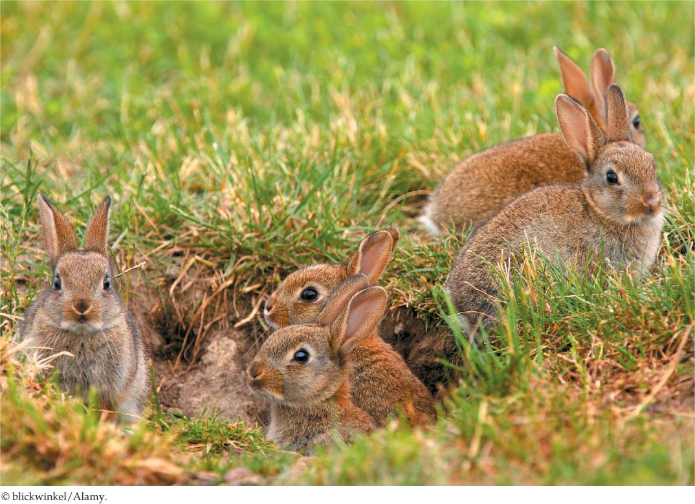

| 37 | Animal Reproduction |
|

The ability of rabbit populations to expand rapidly is based on distinctive features of their reproductive biology. European rabbits (Oryctolagus cuniculus) such as these are noted for their reproductive potential.
|
Rabbits are famed for their reproductive potential. Some of this fame is of a shocking kind. European rabbits (Oryctolagus cuniculus) were introduced into Australia around 1860 so they could be hunted for sport. Populations quickly grew into the millions, and today rabbits are blamed for dramatic habitat destruction in much of the country.
Reproductive biology is not the only factor that affects whether a species becomes a pest or an asset in the wild. The presence or absence of natural predators, for example, is also important.
Nonetheless, any analysis of rabbits must take into consideration that, for mammals of their body size, their reproductive biology endows them with an extraordinary capacity to multiply. One pair of European rabbits has the biological potential to produce 15 pairs in a year and (by the principles of exponential growth) more than 200 pairs in 2 years.
Two aspects of the reproductive biology of rabbits stand out in explaining this reproductive potential. First, rabbits exhibit postpartum estrus. Estrus, or “heat,” is a behavioral state in which a female expresses readiness to mate. Females of most nonhuman mammals, including rabbits, avoid or repel males except when in estrus. Postpartum estrus is a specialized type of estrus in which a female enters heat immediately after she gives birth (postpartum means “following birth”). When a female rabbit gives birth, she of course has a litter of young to nurse. If a male is present, however, she also goes immediately into estrus and mates. Not uncommonly, she therefore supports two litters at once! As she nurses the just-born litter, she simultaneously nurtures a new litter in her uterus.
The second key reproductive characteristic of rabbits is induced ovulation. Ovulation is the release of eggs (ova) from the ovaries into the reproductive tract so they can potentially meet sperm. In most mammals, including humans, ovulation occurs independently of mating. Pregnancy thus has a large element of chance in whether it occurs. A female might mate and get lots of sperm, yet not become pregnant because her ovaries happen to release eggs at a different time. In a species with induced ovulation, by contrast, the act of mating directly causes ovulation to occur. When a female rabbit copulates, signals are immediately sent to her brain, which promptly sends signals to the ovaries, resulting in the release of eggs. The process guarantees that eggs will be present for fertilization in the female’s reproductive tract at the same time that sperm are there to fertilize them.
What differences and similarities exist between mammals that exhibit induced ovulation and those that ovulate independently of mating?